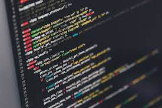

Développement web
Sites web modernes, JavaScript, intégration responsive et front-end.
Voir les projets dev ↓
Étudiant en BUT MMI, je conçois des expériences de
développement web et des
dispositifs interactifs.
Ce portfolio rassemble mes projets numériques : interfaces web,
prototypes interactifs et expériences utilisateur.

Sites web modernes, JavaScript, intégration responsive et front-end.
Voir les projets dev ↓
Principalement differents projet 3D mais aussi d'autre projet plus "artistique".
Voir les projets interactifs ↓Développement
Projets réalisés en BUT MMI autour de l’intégration de maquettes, du JavaScript, des APIs et de l’optimisation d’interfaces web.
Dispositifs interactifs
Projets qui explorent l’interactivité : installations, identités numériques et expériences centrées sur l’utilisateur.